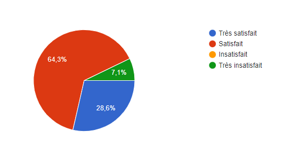
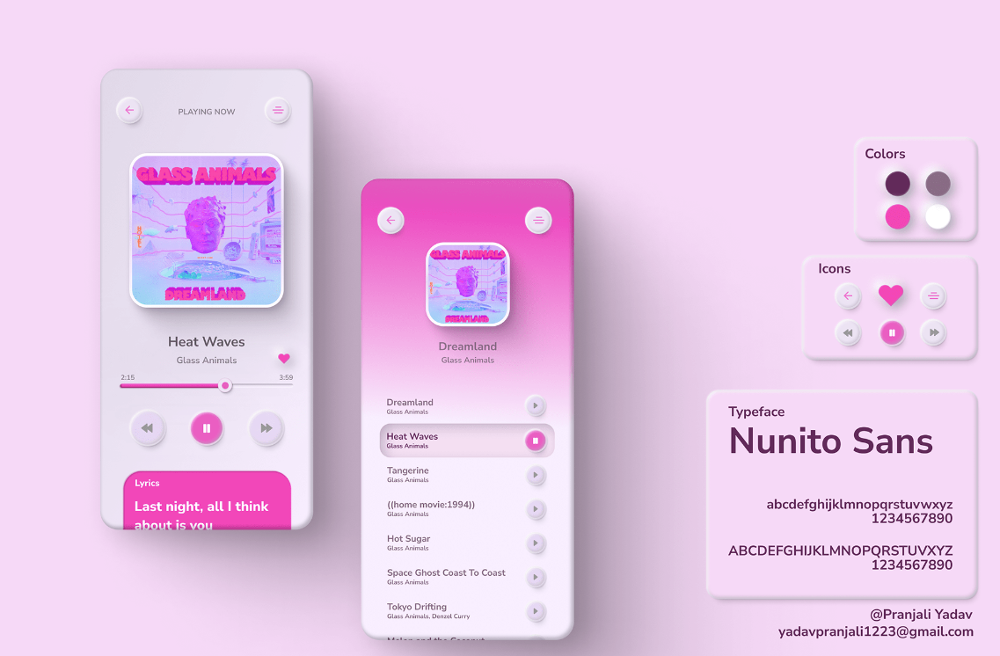
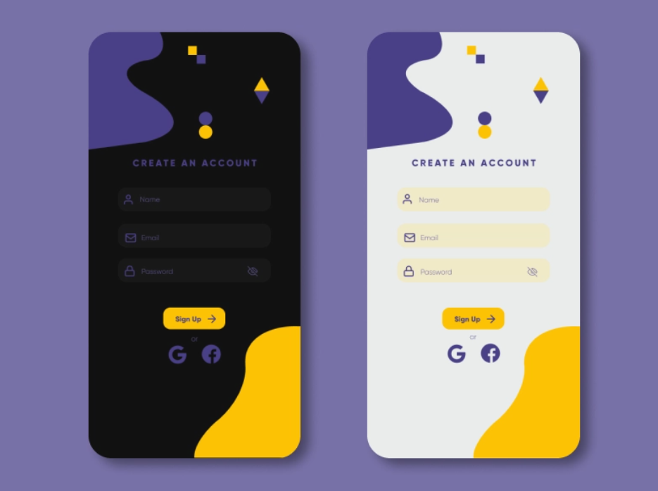

Case-Study
Le pr◉jet
Keep a Record est un travail de fin d'année issu d’enquêtes menées de manière consciencieuse ainsi que plusieurs recherches qui repose sur le prototype. L’objectif de Keep a Record est de garder facilement une trace de leurs souvenirs dans le monde de l'événementiel près d’eux et de connaître les tournées que feront les artistes.
Un projet digne d'un Travail de Fin d'Année doit forcément être quelque chose qui nous parle, qu'on aimerait partager. Pour ma part j’étais parti sur l’univers de la musique. J’étais inquiète quant au fait qu’il y ait des vols de sacs, de bien personnels lors de l'événementiel. J’ai proposé une vente de produit sécurisés comme des sacs, des sacs à bananes, des bandoulières. Mais ce projet ne démarquait pas tant que ça, le produit existait déjà, je n’avais qu’à faire un site qui les regroupes et de toute manière rien n’est sécurisé à 100%. Je me voyais pas mentir à mes utilisateurs, à mes futurs clients. C'est là que mon premier pivot intervient.
Mon premier pivot s'est donc fait, c'est en parlant à des gens intéressés par le monde du festival/concert que je me suis dis qu'au fond, ce que je voulais retenir dans ce projet c'est avant tout le ressentis des personnes. Il n'existe pas un monde où les personnes intéressés par ce domaine n'ait pas envie de garder leur bons souvenirs quelque part. Mais du coup ma question se pose: comment pourrait-on donner envie aux gens d'écrire leur pensées, illustrer leur moment vécu que ça soit sous forme de phrase ou d’image ? Ne vous en faites pas, j'ai la réponse, suivez-moi.
Rais◉nnement
Une étude physchologique à démontrer que l’écriture est un bon moyen d’identifier et exprimer ses émotions pour leur donner du sens et mieux les comprendre. Mais non seulement exprimer les émotions par écrit clarifie l’esprit, mais cela facilite aussi le processus de résolution de problèmes.
Design et c◉ntenu
Garder une trace de nos histoires de manière personnelle. L'animation circulaire du logo part de l'idée que l'on enregistre notre passage. Le cercle rouge est tout simplement la représentation de l'enregistrement.
 Un problème une solution
Typ◉graphie. Pr◉ner la clarté et la lisibilité.
C’est sur base d’analyse complète que j’ai choisis ma typographie. Il fallait qu’elle soit claire et lisible, que les lettres ne se confondent pas entre-elles:
Il y a accessibility.digital.gov qui est un site intéressant qui regroupe les éléments à considérer pour choisir sa typographie.
- Il fonctionne bien quand il est petit ou grand.
- Il a une grande hauteur d'x.
- Le caractère est grand pour sa taille en points.
- Les métriques (telles que la hauteur x) sont cohérentes entre les formes de lettres.
- Les formes de lettres individuelles ont une forme distincte et ne peuvent pas être confondues avec d'autres. Par exemple : I, l et 1 sont distincts. 0 et O sont distincts.
- La police de caractères prend en charge tous les caractères et styles de police nécessaires.
C’est sur base d’analyse complète qu
Le modus operandi
Le bilan
L’utilisation d’un workflow, m’a quant à elle permis de prendre plus de temps sur la partie développement, et d’effectuer des modifications à mon design assez facilement. Enfin, je pense avoir retiré pas mal d’enseignements au niveau de l’expérience utilisateur, en la plaçant au centre de la conception de mon projet.
Vu le travail accompli pour ce TFA, je sais que toutes les notions découvertes ou appronfondies pendant ces dernières semaines me seront utiles pour l'avenir, que ça soit pour gagner du temps ou économiser mon énergie. Au final, je suis plutôt content du contenu présenté, malgré certaines améliorations possibles.
Pour en savoir plus sur les retours utilisateurs, tu peux découvrir les user-journey.
Pour en savoir plus sur la réflexion autour de ce projet, tu peux consulter le dossier de production.